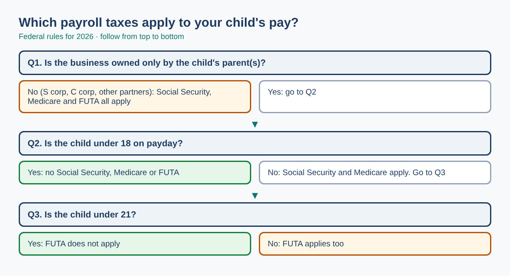
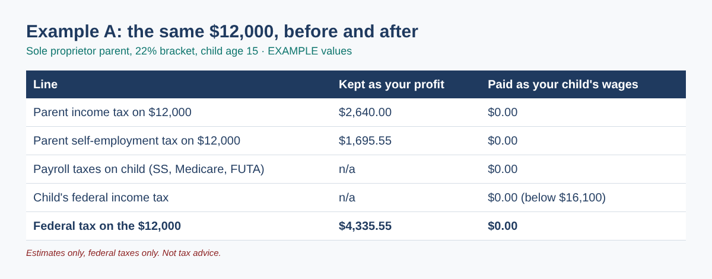
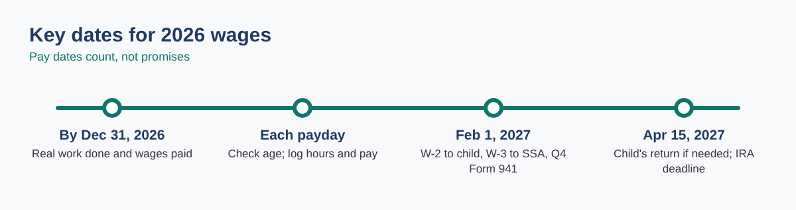

Your 15-year-old already scans receipts, restocks shelves and takes product photos for your shop. Should you be paying them, and if you do, what happens with payroll taxes? For many family businesses, putting a child on payroll is one of the simplest legitimate year-end moves: the wages are a business expense for you, and the child can earn up to the standard deduction without owing federal income tax.
But the rules depend on two things people often get wrong: who owns the business and how old the child is on payday. Get either one wrong and you either miss the benefit or under-withhold payroll taxes. This guide walks you through the rules, the math, and the paperwork, with formulas you can type into Excel or Google Sheets.
Who this is for: owners of a sole proprietorship, a one-owner LLC, a partnership with a spouse, or an S or C corporation who want to pay a child for real work before December 31, 2026.
Under IRS rules, a child under 18 who works for a parent's sole proprietorship (or for a partnership where every partner is a parent of the child) is not subject to Social Security and Medicare taxes, and a child under 21 is not subject to FUTA. If the business is a corporation, or a partnership with any non-parent partner, those taxes apply at any age.
| Who owns the business | Child under 18 | Child 18-20 | Child 21+ |
|---|---|---|---|
| Parent as sole proprietor (incl. a 1-owner LLC not taxed as a corporation) | No Social Security/Medicare, no FUTA | Social Security/Medicare apply, no FUTA | All apply |
| Partnership where every partner is a parent of the child | No Social Security/Medicare, no FUTA | Social Security/Medicare apply, no FUTA | All apply |
| S corporation, C corporation, or partnership with a non-parent partner | All apply | All apply | All apply |
Federal income tax withholding rules apply at every age. Source: IRS, Family Employees.

Put the wages in cell B1 and your federal bracket in B2 (for example 22%). For a parent-owned business with a child under 18:
=B1*B2=B1*0.9235*0.153 (use 0.029 instead of 0.153 if your self-employment earnings are already above $184,500)=MIN(16100, MAX(1350, B1+450))=MAX(0, B1 - B3) where B3 holds the result of step 3With $12,000 of wages and a 22% bracket, that is $2,640 + $1,695.55 = $4,335.55, and the child owes no federal income tax because $12,000 is below the $16,100 standard deduction. Example values only.

The benefit shrinks when payroll taxes apply. Here is the same idea for three different families:
| EXAMPLE values | A: Sole prop, age 15 | B: S corp, age 16 | C: Parents' partnership, age 19 |
|---|---|---|---|
| Wages | $12,000 | $12,000 | $16,100 |
| Parent's bracket | 22% | 24% | 22% |
| Social Security + Medicare (business + child) | $0 | $1,836.00 | $2,463.30 |
| FUTA | $0 | $42.00 | $0 |
| Income tax saved by the deduction | $2,640.00 | $3,110.40 | $3,812.96 |
| Self-employment tax saved | $1,695.55 | n/a | $464.17 |
| Child's federal income tax | $0 | $0 | $0 |
| Estimated family savings | $4,335.55 | $1,232.40 | $1,813.83 |
Examples only. Federal taxes only. C: the parent's self-employment earnings are above the $184,500 Social Security wage base, so only the 2.9% Medicare part is saved.
For a corporation, the payroll taxes are real costs. For a C corporation the deduction is valued at the 21% corporate rate, so check the math before you start.
=(End-Start)*24 gives hours.
Often not, if wages are the only income and stay at or below the standard deduction. A child may still want to file to get back any federal income tax that was withheld. Check the IRS filing requirements for dependents each year.
Wages are earned income, so the child can contribute up to the lesser of the wages or the 2026 IRA limit of $7,500. A custodial account is usually needed for a minor.
Pay before the birthday keeps the exemption; pay after it is subject to Social Security and Medicare (FUTA stays exempt until 21 for a parent-owned business). Track the age on each pay date.
The tax rules have no minimum age, but the work must be real and age-appropriate, and federal and state child labor rules still apply. Federal law has a parental exemption for many non-hazardous jobs; your state may be stricter.
You can still pay your child, and the wages are deductible, but Social Security, Medicare and FUTA apply at any age, which reduces the savings.
You can download the ready-made Hiring Your Child: 2026 Family Payroll Planner (formulas, timesheet, pay log that checks the 18th birthday, and year-end checklist) for free in the Free kit download box below (Excel + PDF guide, no sign-up).
This article is for education only and is not tax, legal or financial advice. Figures are federal and for 2026; state rules vary. Confirm your situation with a qualified tax professional.
Sources: IRS, Family Employees: https://www.irs.gov/businesses/small-businesses-self-employed/family-employees · IRS Publication 15 (2026), Employer's Tax Guide (Social Security wage base $184,500; FUTA 6.0% on the first $7,000, credit up to 5.4%): https://www.irs.gov/publications/p15 · IRS, Inflation-adjusted tax items by tax year (2026 standard deduction and brackets, Rev. Proc. 2025-32): https://www.irs.gov/newsroom/inflation-adjusted-tax-items-by-tax-year · IRS IR-2025-111 (2026 IRA limit $7,500): https://www.irs.gov/newsroom/401k-limit-increases-to-24500-for-2026-ira-limit-increases-to-7500 · IRS Publication 926 (2026) for the February 1, 2027 W-2 date: https://www.irs.gov/publications/p926 · US Department of Labor, child labor: https://www.dol.gov/agencies/whd/child-labor